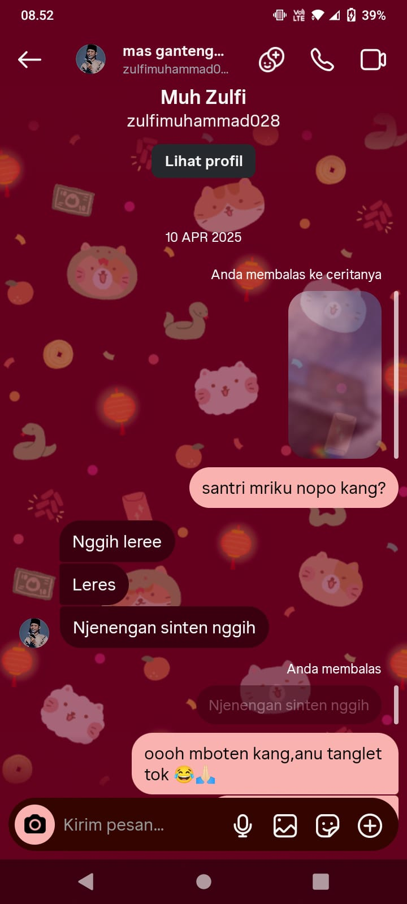
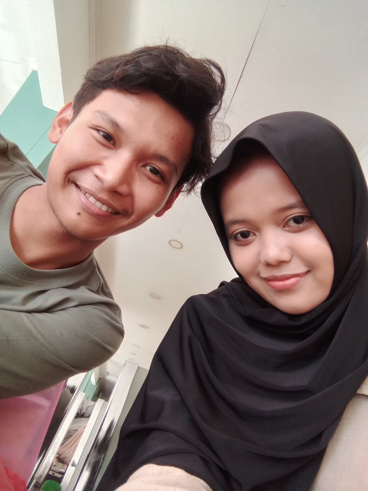
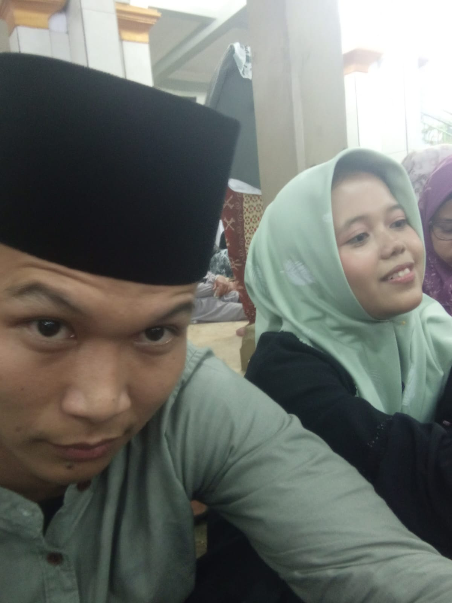
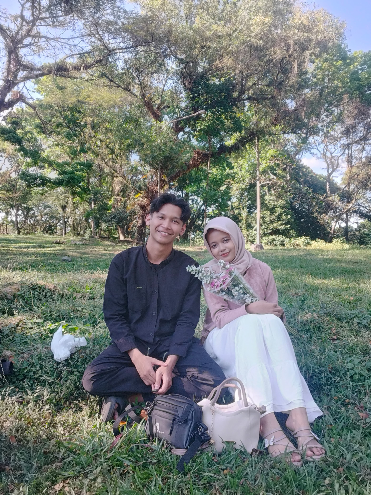
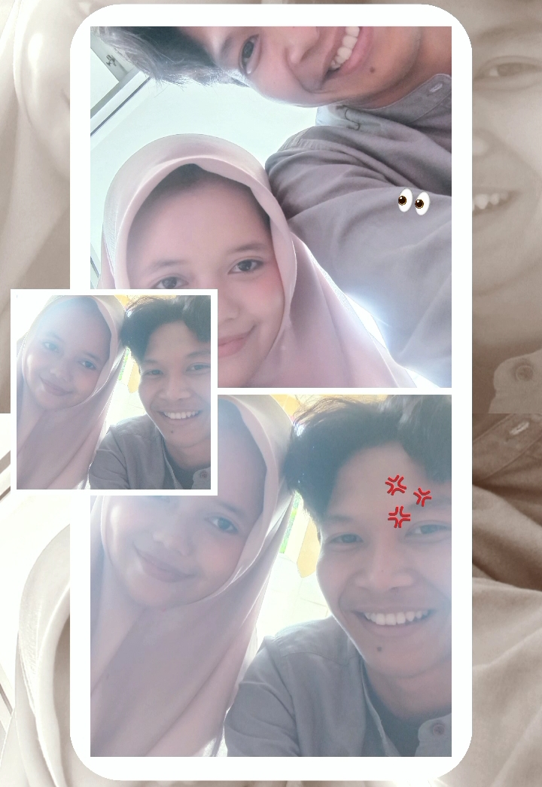

Cerita awal bertemu hingga menjadi bagian tak terpisahkan satu sama lain ❤️

Semua dimulai dari pertemuan yang tak terduga yaitu dm ig dan berlanjut dengan saling kenal serta dianya perhatian sekali ke saya sampe sampe saya jatuh hati ke dia nya, awal awal berbagi cerita sederhana, dan tak menyangka bahwa seseorang yang hadir di waktu itu akan menjadi bagian terindah dalam perjalanan hidup aku ke depannya.awal kisah bertemu itu karena dm ig yang awal nya memanggil kang dan mbak menjadi dek dan mas selanjutnya menjadi sayangg dan sayangg kuu,awalnya yang tidak kenal satu sama lain ,karena ada kalimat " kang alumni mriku nopo " dan " kang jumatan ne adoh apa nggak yah ? " dan lain lain lah yang awal di ucapkan oleh sayangg zahra ku ini heheh,jadi bisa bertahan sampe 1 tahun lebih 3 bulan dan semoga sampe jadi jodoh nantinya Aamiin ❤️

Seiring berjalannya waktu, komunikasi semakin sering. Ada rasa nyaman yang tumbuh perlahan, saling mendengarkan, saling mengerti, dan mulai menyadari bahwa kehadiran satu sama lain membawa kebahagiaan tersendiri,ahirnya pada tanggal 29 desember 2025 itu kami di perbolehkan bertemu oleh ibu nya zahra sayangg aku ini di rumah sakit siaga medika Purbalingg, awal bertemu itu malunya luar biasa ,sampe sampe saya sendiri canggung untuk berbicara dan si zahra nya cantik aku itu sampe sampe menjadi patung saat bertemu dengan aku ,seolah olah kaget dengan rupa asli aku ,yang dia pikir itu kok di medsos sama di asli itu beda jauh hehehe( ucap sayangg zahra ) ahirnya ngobrol lama kelamaan dia na menawarkan suapan brownis kepada ku,seorang Zulfi kalo udah di kasih suapan oleh seoarang zahra cantik mana bisa menolak nya ahirnya terjadi suap menyuap brownis heheh 😘,sehabis saling maem brownis itu sesi foto berdekatan ,nah ini yang nama seorang zulfi kalo udah di ajak fotbar itu jujur degdegan, apalagi fotbarnya itu dengan wanita yang aku sukai dan cantik pula heheh ,ahirnya fotbar deh sampe sampe ibu nya si zahra juga ikutan memfotokan kami berdua,sehabis foto sudah selesai tingal lah waktu yang palingg sedih yaitu pamitan untuk pulangg ,nah di rumah sakit itu kami pulang bersebelahan dan ibu nya zahra jalan di depan ,niat nya zahra itu mau menggandeng aku ( ucap zahra di dalem hti ) tapi itu semua tidak terlaksana di karenakan saya itu jalan nya sangat cepat sampe sampe si zahra itu tertinggal di belakang heheh itu lah kisah sedikit bertemu nya aku pertama kali ( first date ) dengan Alifah azzahra kusuma putri atau biasa di panggil Princes zahra 👑❤️

Mulai melangkah bersama, berbagi suka dan duka. Setiap hari yang dilalui menjadi lebih berwarna. Belajar memahami kekurangan dan kelebihan satu sama lain, serta saling mendukung untuk menjadi pribadi yang lebih baik.sedikit cerita pertemuan di Ponpes Alfatah Banjarnegara itu berawal dari chatan biasa dan berujung dengan di minta ( di tantang ) ke alfatah Oleh cantik zahra ini , jujur awal na itu saya tidak mau tapi lama kelamaan saya mau karena di liat liat agenda saya di pondok itu lagi free, jadinya saya dan kawan saya memutuskan untuk otw main ke banjarnegara untuk melihat rangkaian acara khaflah ahirussanah ponpes Alfatah bajarnegara ,saya dan kawan saya otw dari purbalingga itu kira kira jam 4 sore dan sampe ke pondok alfatah itu jam enam kurang,dan Alhamdulillah nya bisa sholat Maghrib di Masjid Al-fatah tersebut,selanjutnya saya menunggu ke datangg sayangg cantik aku sehabis mahrib di depan masjid ,eh dateng juga sayang cantik aku di samping tempat wudhu dengan membawa 2 teman nya yaitu dira dan dinda ,nah saat di situ saya pura pura ngga liat heheh ,ahir nya dia pun tersipu malu karena aku benar benar datang ke pondok nya ,selanjutnya saya ajak langsung si dia untuk membeli sesuatu di indomaret dekat situ dengan di kawal oleh dua teman yang saya sebutkan tadi haha, sesampai di alfatah saya pertama bertemu dengan ibu nya zahra dan nggak selang lama datang lah bapak nya zahra ,saya jujur pertama deg degan dan rikuh ,dengan segal tekad saya memberanikan untuk bersalaman dengan bapak nya zahra ,ahirnya terlaksana deh salaman dengan bapak tanpa ada perbincangan yang lama ,tetapi dengan kejadian salaman tersebut bapak nya zahra sampe tanya aku ke zahra pada saat acara sudah selesai dan sebelum aku pulang salam yang aku titipkan ke zahra untuk bapak ahirnya di jawab dengan di buktikan vidio rekaman yang di rekam oleh zahra. itu lah sediit point kisah bertemu di Ponpes Alfatah Banjarnegara yang asik dan ingin di ulang kembali lain kali ❤️

Kini, Muhammad Zulfi & Alifah Azzahra Kusuma Putri terus melangkah bersama. Semua cerita, tawa, dan kenangan yang terukir menjadi bukti perjalanan yang indah. Semoga kisah ini terus berlanjut, tumbuh, dan abadi selamanya.sedikit crita di MBS dan Waduk mrica itu awal kisah di karenakan bayang bayang ingin bertemu karena ada barangg saya ( switer ) yanag saya pinjamkan untuk ssayangg zahra di karekana pas itu zahra ke rumah sakit untuk menjenguk ibu nya malem malem ke rumah sakit yang habis oprasi, nah dari situ saya tanya tanya bawa jaket apa nggak ? nah di jawab sama zahra itu ternyata tidak bawa ahirnya saya peka untuk menganterkan switer ke dia di depan gerbang rumah sakit, balik lagi awal mula ketemu di mbs dan waduk itu tuh di karenakan obroloan chat untuk ketemuan dan mengembalikan switer saya ,awal nya di larang untuk bertemu oleh ibuu nya zahra di sebabkan ibu nya zahra khawatir ,lama kelamaan si zahra bilang mau ketemu saya dengan teman nya yang juga mau ketemu ,ahirnya di perbolehkan oleh ibunya dengan syarat jam 5 udah di rumah ,dan ahirnya bisa ketemu juga ,saya dari purbalingga itu jam setengah delapan dan sayangg zahra berngkat dari rumah itu jam 7 untuk menjemput teman nya dulu dan sekalian mampir ke alfamart untuk membeli jajan dan kopi untuk saya ,ahirnya hari hari yang sudah di rencanakan sangat lama ahirnya bisa terlaksanakan yaitu bertemu di MBS dan ke waduk mrica ngobrol lama sampe berjam jam karena saling kangen itu di gubuk MBS yaa makan ya ngobrol serta tidak lupa untuk fotbar dulu sebelum ke Waduk Mrica,nah pada jam 3 baru siap siap untuk ke Waduk tersebut di karenakan waduk mrica itu jauh ahirnya pake motor deh heheh,di pingir jalan ada yang menjual bunga ,saya yang sayangg itu kepikiran untuk membeli buat zahra cantik ahirnya beli dengan di tunggu oleh zahra di jalan yang jarak nya jauh hehe ,ahirnya bisa deh melanjutkan ke waduk itu ,di sana saya di gandeng oleh cantik zahra heheh ( intinya perasaaan saya senang dan tidak bisa di ungkapkap oleh kata kata ) yaaa perasaan saya intinya degdegan karena pertama kali di gandeng oleh cewe yang aku cintai dan aku sayangi ini yaitu Zahra cantikk 💖, setelah di gandeng dan sampe ke tempat yang luas saya mensetting kamera untuk membuat konten lari lari seperti di tik tok itu ,ahirnya terlaksana juga adegan lari lari tersebut hehe,selanjutnya sesi foto bareng lagiii ( suka dehh intinya kalo udah di fase ini ) nah sehabis fotbar udah nih saya dan zahra pun pulang dan biasa saya di gandenh lagii ,heheh asik nya aku di gandeng terusss seruuu dehh dan mampir ke mie ayam di karenakan saya dari waktu dzuhur belum makan hehe.itulah point kisah aku dan zahra cantik aku ini ,semoga lain waktu bisa ketemu lagi dan bisa lanjut certitanya sampe nanti tua dan website ini saya buat untuk kenangan bersama dengan sayangg aku zahraa my love ❤️💍

Nah pertemuan selanjtnya terjadi lagi ahirnya ,awal mula itu saya berniat untuk pulang ke rumah tanggal 8 oktober ,nah pas aku chatan itu ada terbesit untuk bisa ketemu lagi pas udah bilang pas di chat sayangg aku menyarankan aku untuk izin ke ibu nya tetapi di karenakan saya udah izin ini itu eh ternyata malah ngga di jawab jawab izin saya ,al hasil yang izin itu sayangg aku itu dan di perbolehkan ,selanjutnya saya kesal ngga di jawab yaa ahrinya saya mutung deh hehe,nah sehabis itu hari di mana sayangg aku itu mau ke rumah sakit goteng itu,sayangg akuh otw dari rumah jam 6 katanya terus aku otw dari pondok mampir dulu ke warung serabi hehe,sehabis itu aku otw ke rumah sakit ,nah di karenakan aku tau nya zahra itu mau ke rs harapan ibu ,aku otw ke sana ,eh udah nyampe aku dm ig sayangg zahra ternyata malah salah rumah sakit coba ,aku aslinya kesal polllllllll tetapi mau gimana lagi ahirnya aku balik deh dari RS. harapan ibu langsung meluncur ke RS Goeteng purbalinga ,disana saya masuk RS dengan percaya diri dan collll abizzz saya melangkah tegap dan menenteng serabi haha menuju ke tempat duduk sayangg aku itu dan duduk pertama biasa aku menyapa ibu nya dulu baru aku liat anak nya hehe, ini bener atau tidak yah anak nya ternyata betul ahirnya saya duduk ganteng ngobrol sama ibunya terus anak nya ini itu,si zahra bilang " anu udah sering ketemu jadi udah biasa ajah yaa ngga deg degan kaya pertama wkwkw" nah terus ngobrol ini itu ,sayang aku baru daftar deh ke administrasi nya terus masuk ke pemeriksaan jam sepuluh kalo tidak salah nah sebelum masuk itu pas sedang ngobrol sayang aku itu udah berani pegang tangan aku tauu hahha ,di genggam erat erat di saat ibu nya sayangg aku itu fokus liat ke dapan ngga liat aku sama sayangg aku lagi ngapel ,heheh duduk yaa udah jejeran donk wkwkw dan lebih berani nya saayangg aku itu udah pegang wajah aku kaya mau meraupkan sesuatu gitu wkkw,ahirnya pegang pegangan deh walaupun aku itu grogi betul asli ,di pegang sama cewe yang aku sayangii aku cintaiii betul betull itu rasanya deg degan polll grogii nya aku hahha ,sehabis di periksa keluar lah aku dari RS itu sambil tek pegang lagi tangan halus lembut serta hangat nya tangan cewe cantik aku ini wkwkw sampe ke parkiran diam diam aku pegangan hahah,yang mulai itu sayangg aku zahra manisss akuu jadi aku di ajari pegangan tangan yang betulll karena sayangg akuu itu ,nah sehabis ketemuan baru kita pulangg deh ke rumah masing masing horeee dan aku pulang membawa bakwan dan lontong pemberian ibu nya zahra ,itulah kisah ketemuan di RS.Goeteng Purbalingga pada tangal 9 Oktober 2026 ,nantikan kisah kami selanjutnya heheh